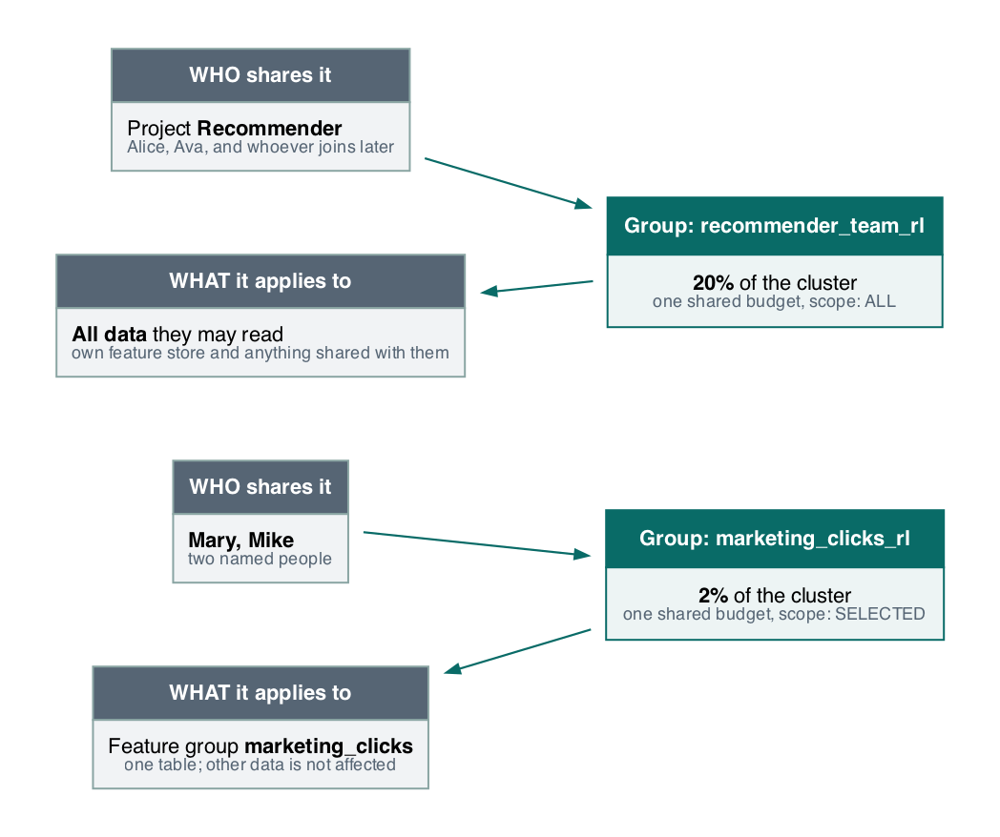
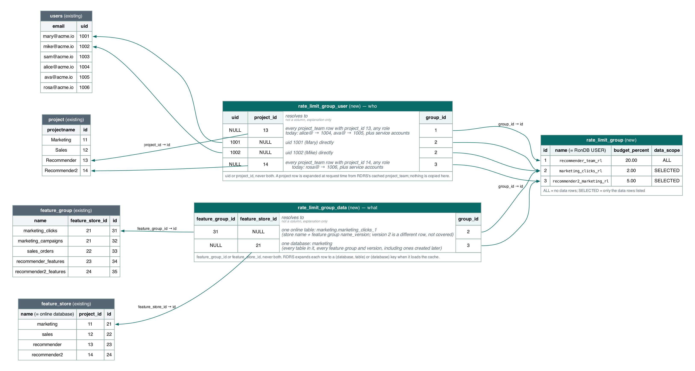
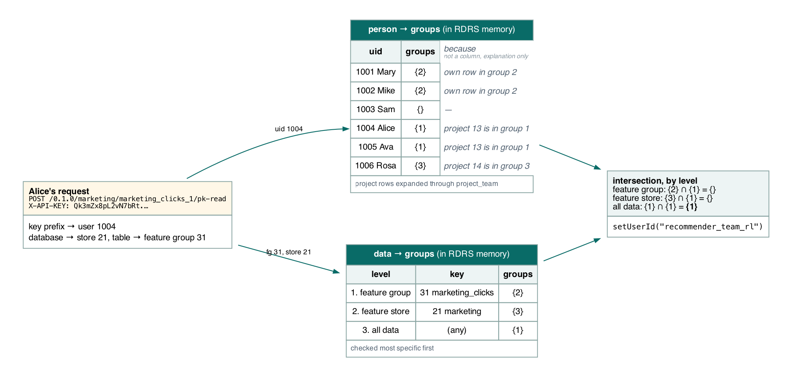
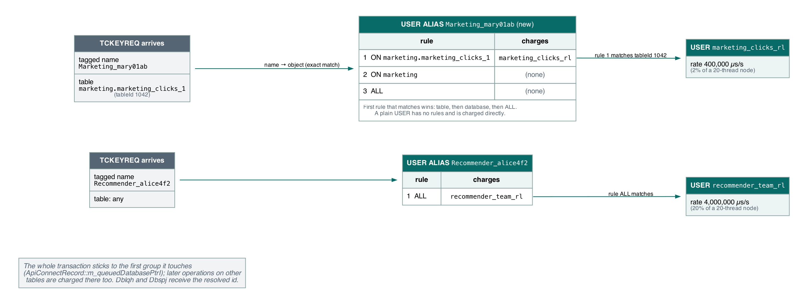
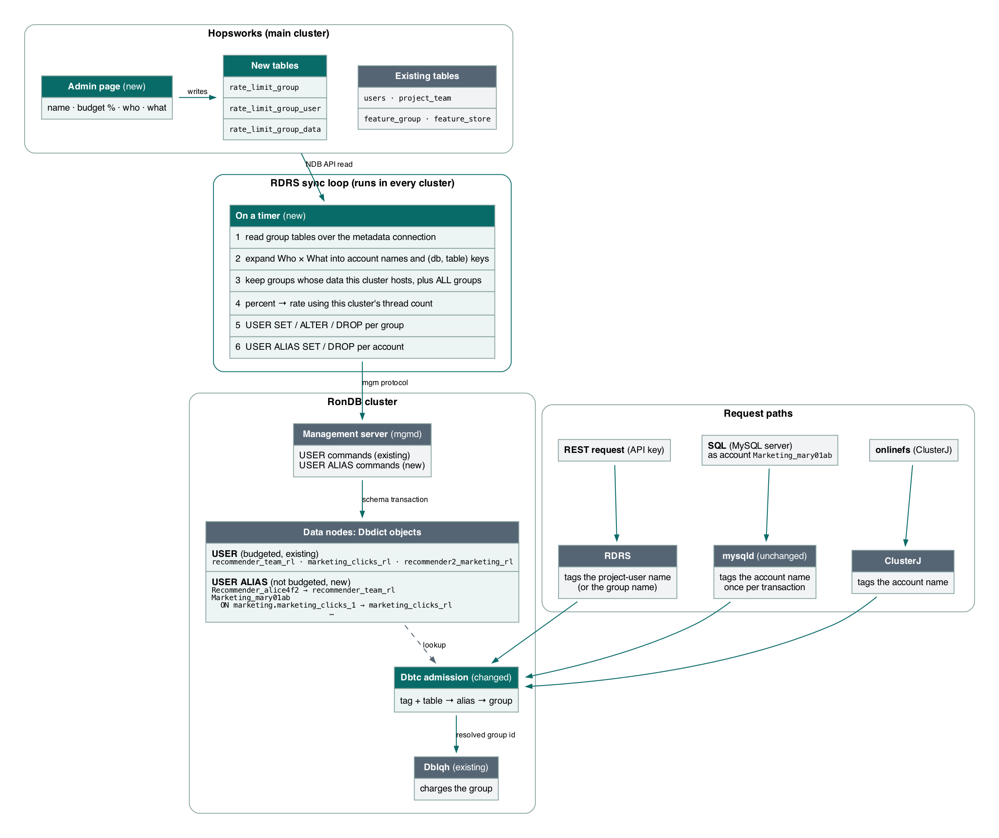
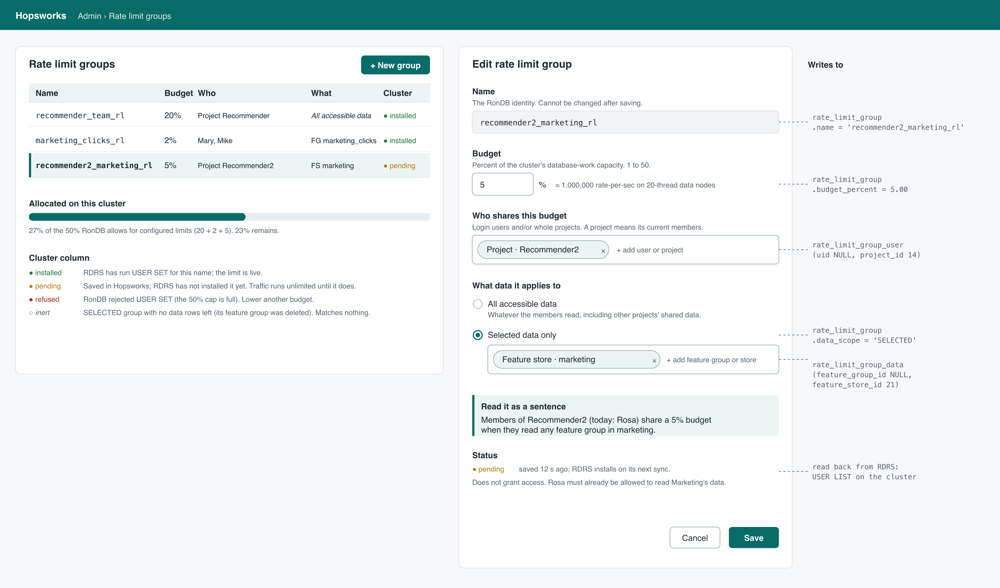
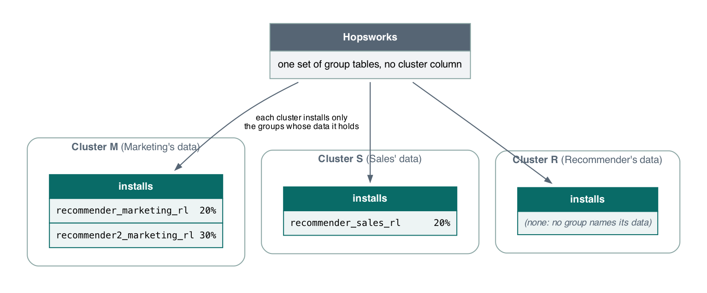
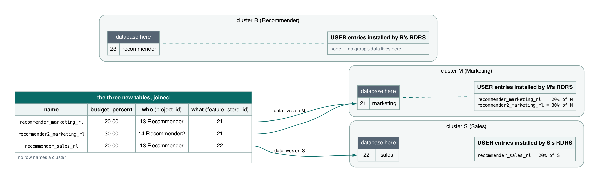

Hopsworks · RonDB · Internal design document · October 2026
Hopsworks OnlineFS Ratelimiting: Design Version 1.0
How a team’s shared budget for the online feature store is stored in Hopsworks, how a request on either entry point, the REST server (RDRS) or the MySQL server, is matched to that budget, and what RonDB enforces. This document separates what is already implemented from what is new, and says how the new parts will be built.
The feature introduces the rate limit group: a named budget shared by a set of login users or whole projects, applied either to everything they read or to named feature groups and feature stores. Hopsworks stores groups in three new tables. RDRS reads those tables and installs them on every RonDB cluster. Every transaction, whether it enters through RDRS with an API key or through the MySQL server with a database account, is tagged with the caller’s identity, and RonDB works out which group that identity and that table belong to, then charges the group’s budget using the per-name rate limiting it already has.
The document is built around one worked example, four projects sharing a single RonDB cluster, introduced in section 3. Deployments with one RonDB cluster per project are covered in section 11. The customer white paper Hopsworks OnlineFS Ratelimiting describes the same feature without the internals.
1. What exists and what is new
The feature is mostly assembly of parts that already exist. The table is the map of the document: each row says where the part is described and whether it is implemented.
| Part | Status | Where | Section |
|---|---|---|---|
Per-name rate limiting in the data nodes (USER SET, cost metering, queueing and rejection, the 50% cap) | Implemented, RonDB 26.02 | Dbdict, Dbtc, Dblqh, mgm server | 2.1, 13 |
| Transaction tagging from RDRS by API key | Implemented, 26.02-main | RDRS | 2.2 |
| Transaction tagging from RDRS by project-user name (username mode) | Implemented on branch RONDB-978-Cont, not merged | RDRS | 2.2 |
| Transaction tagging from the MySQL server by login account | Implemented, 26.02; off by default | ha_ndbcluster | 2.2 |
One MySQL account per project member, named Project_username | Implemented | Hopsworks | 2.3 |
| The three group tables and the admin page | New | Hopsworks | 4, 10 |
| Matching (person, table) → group for REST requests | New, optional first step | RDRS | 5 |
| The alias object: (tagged name, table) → group inside RonDB, for all paths | New | Dbdict, Dbtc, mgm server | 6, 7 |
The sync loop that turns rows into USER and USER ALIAS objects on every cluster | New | RDRS | 8 |
Turning the switches on (ndb_user_rate_limits, ActivateRateLimits) | New configuration | rondb-helm | 12 |

Two things a group is not: it is not a permission (listing someone in a group does not let them read anything new), and it is not a reservation (20% is a ceiling, not guaranteed capacity).
2. What exists today
2.1 RonDB meters work per name
Since RonDB 26.02 the data nodes can put a budget on a name:
ndb_mgm> USER SET etl_jobs --rate-per-sec=10000All database work tagged etl_jobs may then use 10,000 microseconds of
CPU per second on each data node, about 1% of one thread. A USER is a
dictionary object stored as $name in the same namespace as
DATABASE QUOTA objects (Dbdict.cpp:33182). The client resolves
the name to an object id once (ClusterMgr::retrieveUserId,
ClusterMgr.cpp:1535, a cache filled from LIST_DATABASE and
refreshed every 60 s) and sends only the id; Dbtc admits or queues at
TCKEYREQ, SCAN_TABREQ and TCINDXREQ; Dblqh charges
per row operation (update_rate_usage, DblqhMain.cpp:40541). An
unknown name runs unmetered. The full mechanics, the cost model and the 50% cap are in
section 13.
2.2 Two entry points, two identities
Data in the online feature store is reached through two servers, and each already tags the NDB transactions it starts:
| Entry point | Caller identified by | What is tagged today | Status |
|---|---|---|---|
| REST server (RDRS) | API key → api_key.user_id → login user; project memberships from project_team by the user’s email | The API key (apikey mode), or the project-user name clip31(ProjectName_username) (username mode) | apikey mode merged on 26.02-main; username mode on RONDB-978-Cont |
| MySQL server | The login account, one per project member (2.3) | The account name, no host: security_context()->user() in ha_ndbcluster::set_user_id (ha_ndbcluster.cc:7756) | 26.02; behind the read-only server variable ndb_user_rate_limits, default OFF |
Three properties of the MySQL server’s tagging shape everything that follows:
- Once per transaction, before any table is known. All handlers in a
session share one
Thd_ndb::trans;set_user_idruns right afterstartTransactionin each of the four places a transaction is started (ha_ndbcluster.cc:7786,7819,7853,7875). AJOINor aBEGIN … COMMITblock carries one tag. - The login name only. No host part, not the privilege user. Inside
a routine declared
SQL SECURITY DEFINERit is the definer. - Off by default, and internal work is untagged. Both
ndb_user_rate_limits(mysqld) andActivateRateLimits(data nodes,common/mgmcommon/ConfigInfo.cpp:650) default to off. The binlog thread, schema distribution and stored-grant replication never tag.
Online ingestion (onlinefs) writes through ClusterJ and tags nothing today.
NdbTransaction::setUserId is available to it if that is ever wanted.
2.3 Hopsworks creates one MySQL account per project member
When a project’s online feature store is first used, and again whenever a member is
added, Hopsworks creates a MySQL account for each member
(OnlineFeaturestoreController.createDatabaseUser). The name is the project
name, an underscore, and the login user’s username, cut to 31 characters if
longer than 32 (onlineDbUsername, lines 694-700;
ONLINE_FEATURESTORE_USERNAME_MAX_LENGTH = 32). The host part is
'%'. A data owner gets ALL on the project’s database, a data
scientist SELECT. A share grants SELECT on the owner’s database
or table to the receiving project’s member accounts, so a reader of shared data
always connects as their own project’s account.
| Person | users.username | Project | MySQL account | Grants |
|---|---|---|---|---|
| Mary (1001) | mary01ab | Marketing (11) | Marketing_mary01ab | ALL on marketing.* |
| Mike (1002) | mike7c3d | Marketing (11) | Marketing_mike7c3d | ALL on marketing.* |
| Sam (1003) | sam00035 | Sales (12) | Sales_sam00035 | ALL on sales.* |
| Alice (1004) | alice4f2 | Recommender (13) | Recommender_alice4f2 | ALL on recommender.*; SELECT on marketing.*; SELECT on sales.sales_orders_1 |
| Ava (1005) | ava3b7c0 | Recommender (13) | Recommender_ava3b7c0 | same as Alice |
| Rosa (1006) | rosa9e1f | Recommender2 (14) | Recommender2_rosa9e1f | ALL on recommender2.*; SELECT on marketing.* |
The account name is the same string RDRS’s username mode produces
(RONDB-978-Cont builds it with the same clip, byte for byte), so one person
is one name on both entry points. It also decodes back to (project, user) without a
lookup table: project names are at most 25 characters from
[A-Za-z0-9_] with no double underscore
(FolderNameValidator.java:57-67, length at :105-107) and unique
ignoring case (checked before insert in ProjectController.java:740-747; the
database unique key is case-sensitive); generated usernames are exactly eight
lowercase alphanumerics, derived from the email and padded or truncated
(UsersController.java:536-571); service usernames
(onlinefs, srvmanager) contain no underscore. The last
underscore therefore always splits off the exact project name, and at least five
characters of the username survive the clip; the resolver recomputes the clip over that
project’s members and compares.
Collisions exist today and are not solved here. Two members of a
24- or 25-character project whose usernames share their first five or six characters
clip to the same account. Hopsworks has no guard (CREATE USER IF NOT EXISTS
silently reuses the account), the second member’s login already fails, and removing
either member drops the shared account. Such a pair shares one identity for rate
limiting; document it as a limitation of the account scheme.
Service accounts: onlinefs (data scientist) and srvmanager
(data owner) are on every team and get accounts; airflow is on the team but
is filtered out before accounts are created (ProjectUtils.java:361-365) and
has none. One timing caveat: account creation runs in the lazy online-feature-store
setup, which runs once and returns early afterwards
(OnlineFeaturestoreController.java:134-136), and adding a service user
later never calls createDatabaseUser; a service user only has an account if
it was already a member when that setup first ran.
Who uses these accounts: every user-facing SQL path, including the Hopsworks backend’s
own preview and feature-group DDL on the caller’s behalf. Only administrative work (grants,
INFORMATION_SCHEMA, tracing and ingestion-result reads) runs as the admin
account, which is never metered.
3. The scenario, and what Hopsworks already stores
In Hopsworks a project is a team’s workspace: it has members and owns a
feature store, the project’s collection of feature groups
(tables of features). A project can share its whole store, or single feature groups, with
other projects. In RonDB a feature store is one database named after the project in lower
case (marketing), and each online feature group is a table in it named
<name>_<version> (marketing_clicks_1).
The example has four projects on one RonDB cluster. Marketing has shared its feature
store with Recommender and with Recommender2. Sales has shared sales_orders
with Recommender.
| Project | Members | Feature groups it owns | Shared with |
|---|---|---|---|
| Marketing | Mary, Mike | marketing_clicks, marketing_campaigns | Recommender, Recommender2 (whole store) |
| Sales | Sam | sales_orders | Recommender (that one feature group) |
| Recommender | Alice, Ava | recommender_features | nobody |
| Recommender2 | Rosa | recommender2_features | nobody |
The group tables refer to people, projects and data by the ids Hopsworks already has. Here are the existing rows the examples will point at:

The shares are in shared_feature_store (store 21 → projects 13 and 14)
and shared_feature_group (feature group 33 → project 13). RDRS already reads
all of these tables to authenticate a key and to decide whether a read is allowed.
Nothing in them changes.
The administrator has three requirements. Group names are free text; the examples end
in _rl (for “rate limit”) so that a group is never confused with the project
or feature group it is named after.
| Requirement | Group | Who | What | Budget |
|---|---|---|---|---|
| “Recommender gets 20% of the cluster, whatever its members read.” | recommender_team_rl | project 13 | all accessible data | 20% |
“Marketing’s own people may use at most 2% on marketing_clicks.” | marketing_clicks_rl | uids 1001, 1002 | feature group 31 | 2% |
| “Recommender2 may use at most 5% when reading Marketing’s data.” | recommender2_marketing_rl | project 14 | feature store 21 | 5% |
4. The new tables
Three tables in the hopsworks database. They refer to the existing rows
above by id and change nothing in the existing tables. Column definitions are in the
appendix.
| Table | Answers the question | One row is |
|---|---|---|
rate_limit_group | Which groups exist, and how big is each? | One group: a name, a percentage, and whether it covers all data or selected data. |
rate_limit_group_user | Who shares the group? | One person (users.uid) or one whole project (project.id). |
rate_limit_group_data | Which data does it apply to? | One feature group (feature_group.id) or one whole feature store (feature_store.id). |
Here is every row written for the three requirements:

ALL. The three budgets add up to 27%, under the 50% cap.4.1 rate_limit_group
nameis the string RonDB meters: the cluster gets aUSER SET <name>entry (section 8). Unique. Renaming would mean dropping and recreating the RonDB entry, so the UI does not allow it.budget_percentis a share of a data node’s capacity. It is stored as a percentage, not as a RonDB rate, and converted at install time, because each cluster converts with its own thread count (section 11).data_scopeisALL(“whatever its members read”; the group has no data rows) orSELECTED(“only the data rows listed”). Section 9 explains why this is a column and not “no data rows means all”.
4.2 rate_limit_group_user
A row sets uid or project_id, never both.
- A uid row names exactly one login user. Nothing is interpreted. Row (1001, NULL) is Mary and nobody else.
- A project row is a rule, not a list. It means “every user who has a
project_teamrow for this project at the moment the request arrives”. RDRS already computes that when it authenticates a key (it looks upproject_teamby the owner’s email;team_memberholds an email, not a uid). Every role counts;team_roleis not consulted. Service accounts count unless excluded (section 14). Membership changes write nothing here: when Bob joins Recommender he is in group 1 after the next expansion, and when Ava leaves she drops out the same way.
Why people and not API keys? A key has a user_id and no
project. RDRS already turns a key into its owner, so “is this key in a group?” becomes
“is Alice in a group?”, and the answer is the same for key 501, key 502 and the key Alice
creates tomorrow. Keys never appear in the new tables. Why people and not
accounts? The account is derived from (project, user) and is recomputed by the
sync loop; storing it would be a second copy that drifts.
4.3 rate_limit_group_data
A row sets feature_group_id or feature_store_id, never both.
- A feature group row is one online table: row 31 resolves to
database
marketingand tablemarketing_clicks_1. A feature group row in Hopsworks is one version, somarketing_clicksversion 2 is a newfeature_grouprow with a new id, not covered until added. A feature group that is not online-enabled has no table and matches nothing. - A feature store row is one database: row 21 resolves to
marketingand matches every table in it, every feature group, every version, including ones created after the row was saved.
Rows are expanded into (database, table) or (database) keys when loaded, with the two
lookups RDRS already uses to expand fine-grained sharing grants
(find_feature_group_int, find_feature_store_name_int in
rdrs_hopsworks_dal.cpp). Nothing is parsed per request. A row describes data,
not a sharing relationship; whether a read is allowed is still decided by the
sharing tables, this table only decides which budget pays.
4.4 Who gets charged for what
| Who reads what | Charged to | Why |
|---|---|---|
Alice reads recommender_features_1 | recommender_team_rl | Alice is in project 13; group 1 covers all data. |
Alice reads marketing_clicks_1 | recommender_team_rl | Same. Borrowed data is no different for an ALL group. |
Ava reads sales_orders_1 | recommender_team_rl | Same group; Alice and Ava share the 20%. |
Mary reads marketing_clicks_1 | marketing_clicks_rl | Mary (1001) is listed, and so is feature group 31. |
Mary reads marketing_campaigns_1 | none | Her group covers only feature group 31; this read is not limited. |
Rosa reads marketing_clicks_1 | recommender2_marketing_rl | Rosa is in project 14; store 21 contains feature group 31. |
Rosa reads marketing_campaigns_1 | recommender2_marketing_rl | Same store, same group. |
Rosa reads sales_orders_1 | rejected | Sales never shared with Recommender2. Authorization fails before any group is considered. |
Sam reads sales_orders_1 | none | Sam is not in any group, so his reads are not limited. |
When two groups match, the more specific one wins. Suppose Marketing
adds a fourth group, recommender2_clicks_rl: project 14 on feature group 31,
1%. Rosa reading marketing_clicks_1 now matches group 3 (scoped to the store)
and group 4 (scoped to the feature group). The feature-group scope is more specific, so she
is charged to recommender2_clicks_rl; her reads of
marketing_campaigns_1 still go to recommender2_marketing_rl. The
two budgets are separate.
5. Matching on the REST path (RDRS)
RDRS reads the Hopsworks tables it needs over its metadata connection:
api_key, users, project_team, project,
feature_store, feature_group, the sharing tables
(shared_feature_store, shared_feature_group,
shared_feature) and the restricted-access tables. What it caches is not the
rows but the result: per API-key prefix, the resolved databases and grants
(api_key.hpp:175), refreshed every CacheRefreshIntervalMS
(default 180 s) with an NDB event watch on api_key only. The three group
tables are read the same way, but their cache is cluster-wide, keyed by group rather
than by key, since a group row concerns every request. From the group rows RDRS can
build two lookup maps and match each request itself:

POST /0.1.0/marketing/marketing_clicks_1/pk-read
X-API-KEY: Qk3mZx8pL2vN7bRt.<64-character secret>| Step | Lookup | Result | Status |
|---|---|---|---|
| 1 | Key prefix Qk3mZx8pL2vN7bRt → api_key row 501; verify the secret against the stored hash. | user_id 1004 (Alice) | exists |
| 2 | 1004 → users.email → every project_team row with that team_member, any role. | member of project 13 | exists |
| 3 | The request names database marketing and table marketing_clicks_1: store 21, feature group 31 in the cache. | store 21, fg 31 | exists |
| 4 | Is project 13 allowed to read it? Not a member of project 11; shared_feature_store has 21 → 13. | allowed | exists |
| 5 | person → groups for 1004 | {1} | new |
| 6 | data → groups, most specific first: fg 31 → {2}; store 21 → {3}; all → {1} | {2}, {3}, {1} | new |
| 7 | First level with something in common with {1}: {2}∩{1} = {}, {3}∩{1} = {}, {1}∩{1} = {1} | group 1 | new |
| 8 | setUserId("recommender_team_rl") on the transaction; RonDB meters it. | tagged | exists |
Steps 5 to 7 are the new work: two map lookups and an intersection per request. The other keys of the cast walk the same way: keys 501 and 502 both belong to Alice and land in the same group, as will a third key she creates tomorrow; Mary’s one key lands in a group for one table and in none for another, because the match is on (person, data), not on the key.
Edge cases: nothing matches → RDRS does what it does today (tag the key, or the project-user name, per configured mode); a tie at the same level → Hopsworks refuses to save it (section 9), and if a stale cache produces one anyway RDRS picks the lower group id and logs it; one transaction over several feature groups (a feature-view read) → one name per transaction, charged to the most restrictive matching group; sharing removed → step 4 rejects, groups never grant access.
The limit of this approach is its location. It covers only requests that pass through RDRS. SQL through the MySQL server never does.
6. Matching on the SQL path (MySQL server), and why RonDB must do it
6.1 The MySQL server cannot run the lookup of section 5
The server tags the account name, and the account decodes to (project, user) (2.3). But a per-table group decision cannot be made there, for three reasons that follow from 2.2:
- The tag is fixed per transaction before any table is known. A per-table decision
would need the handler to defer or re-tag, and a
JOINacross two tables in different groups has no single right answer at the server. - The server would need the group tables, the Hopsworks membership expansion and an
event-driven cache of them, which is RDRS’s Hopsworks-metadata cache rebuilt inside
mysqld. The closest existing template, the index-statistics listener on
ndb_index_stat_head(ha_ndb_index_stat.cc:1839), shows it can be done; the stored-grants tablendb_sql_metadatais not a template (it has no event subscription, changes travel through schema distribution). It would be a second copy of everything in section 5. - ClusterJ, if ingestion is ever metered, would need a third copy.
6.2 What every path has in common: the data nodes see the tag and the table together
Both entry points tag the transaction with a name that identifies the caller, and the
data nodes see the table next to that name at every point where they admit or charge
work: TCKEYREQ (DbtcMain.cpp:3726, localTabptr in
the same block as the user id), SCAN_TABREQ (:16290),
TCINDXREQ (:22518), and the charging function itself,
Dblqh::update_rate_usage(tableId, userPtrI, ns). The kernel is the one
place where (caller, table) → group can be decided for all paths at once. What is missing
is an object that says “this name, on this data, charges that group’s USER”.
That is the alias, specified in section 7.

USER to charge. A plain USER has no rules and is charged directly.6.3 Mary’s statement, step by step
mysql -u Marketing_mary01ab -p …
mysql> SELECT * FROM marketing.marketing_clicks_1 WHERE click_id = 42;| Step | What happens | Result | Status |
|---|---|---|---|
| 1 | Mary logs in; the server’s security context holds Marketing_mary01ab. | account known | exists |
| 2 | The handler starts an NDB transaction and calls setUserId("Marketing_mary01ab"). | tagged | exists |
| 3 | The NDB API’s name cache maps the name to a dictionary object id. Today only USER objects are in that cache; aliases join it. | id of the alias | exists; aliases listed |
| 4 | TCKEYREQ arrives at Dbtc with that id and tableId 1042 (marketing.marketing_clicks_1). | id + table | exists |
| 5 | The object is an alias. Rule 1 (ON marketing.marketing_clicks_1) matches table 1042. | USER marketing_clicks_rl | new |
| 6 | Dbtc records that USER as the transaction’s sticky record (ApiConnectRecord::m_queuedDatabasePtrI) and forwards it to Dblqh, which charges 1.25 µs plus data read. | charged | exists |
Step 5 is the only new work on the request path, and only for names that are aliases. The same walk for other sessions:
| Session | Tag | Table | Alias rule that matches | Charged to |
|---|---|---|---|---|
| Mary, SQL | Marketing_mary01ab | marketing.marketing_campaigns_1 | none (rule 1 is the clicks table only) | no group; unmetered, as today |
| Alice, SQL | Recommender_alice4f2 | sales.sales_orders_1 | ALL | recommender_team_rl |
| Alice, REST, RDRS in username mode | Recommender_alice4f2 | marketing.marketing_clicks_1 | ALL | recommender_team_rl, the same alias as her SQL session |
| Rosa, SQL | Recommender2_rosa9e1f | marketing.marketing_campaigns_1 | ON marketing | recommender2_marketing_rl |
| Hopsworks backend, grants and schema reads | admin account | any | no alias | unmetered, by design |
Alice, SQL JOIN of marketing_clicks_1 and sales_orders_1 | Recommender_alice4f2 | both | ALL, on the first table touched | recommender_team_rl for the whole transaction |
6.4 One mechanism for both entry points
Once RonDB resolves aliases, RDRS no longer needs to find the group itself. It tags the
transaction with the same project-user string the MySQL server would use (username mode,
RONDB-978-Cont), and the alias does the rest. The two maps of section 5
become an optional first step rather than the mechanism. The whole flow:

USER and USER ALIAS objects on every cluster. The request paths (right) tag transactions; Dbtc resolves tag plus table to a group; Dblqh charges it.| RDRS resolves (section 5 only) | RonDB resolves (sections 6 and 7) | |
|---|---|---|
| Entry points covered | RDRS | RDRS and MySQL server (and ClusterJ if it tags) |
| Data-scoped groups on SQL | no | yes |
| RonDB change | none | alias object, Dbtc lookup, mgm commands |
| MySQL server change | none, and SQL is not covered | none |
| RDRS change | cache + two maps + intersection per request, plus the sync loop | the sync loop; tag the project-user name |
| Objects on the cluster | one USER per group | one USER per group, plus one alias per member account; aliases are not budgeted |
| A membership change takes effect | at the next RDRS cache refresh | at the next sync run |
| Per-request cost | two lookups and an intersection in RDRS | one rule lookup in Dbtc for aliased names; nothing for plain USERs |
| A transaction over several tables | RDRS picks (feature view: most restrictive) | the first table touched decides, as the kernel does today for every transaction |
Proposal: RonDB resolves. The Hopsworks tables, the admin page and the sync loop are identical in both columns, so shipping the left column first as a REST-only step wastes little, but the right column is the design. Whether to ship the left column at all was an open decision (section 14); decided 2026-11-13: go straight to the right column. No REST-only intermediate step ships, the per-request maps of section 5 are not built, and RDRS tags the project-user account name from the start.
7. RonDB changes: the alias
Everything in this section is new. It builds on four facts about the 26.02 implementation:
- Names resolve on the client.
ClusterMgr::retrieveUserIdkeeps a hash filled from aLIST_DATABASEwalk withis_user=1, kept current byCREATE/DROP_DATABASE_REPand a full re-list every 60 seconds. Only a 32-bit object id and version go on the wire (TcKeyReqbit 29,ScanTabReqbit 5). An unknown name returnsRNILand the transaction runs unmetered, once the first list walk has completed; before that,setUserIdpays one blockingGET_DATABASE_REQround trip (NdbTransaction.cpp:546-570), and after a write-rate abort the client refuses that name for one second (ClusterMgr.cpp:1574-1578). - Dbdict stores a
USERas$name, in the same namespace and id space asDATABASE QUOTAobjects; 126 usable characters (the$takes one byte ofMAX_DB_NAME_SIZE), and a name may not itself begin with$. - Dbtc keeps the first record a transaction touches in
ApiConnectRecord::m_queuedDatabasePtrI(DbtcMain.cpp:28676,:16330) and forwards the user id to Dblqh only when that record is a user (LQHKEYREQbit 9,SCAN_FRAGREQbit 27). Dbspj copies it into every child operation. - Dbdict already binds each table to a quota database when the table is created
(
CONNECT_TABLE_DB,Dbdict.cpp:8537), so a “table → budget object” link is an existing pattern.
7.1 The object
A USER ALIAS is a Dbdict object stored like a USER
($name), flagged as an alias, with no budget and an ordered
list of rules. A rule is (scope, target): the scope is one table, one database, or
all; the target is a USER. Dbtc evaluates table rules first, then
database rules, then the all rule; the first match wins; no match means the transaction
runs unmetered, which is today’s unknown-name behavior.
| Property | Behavior |
|---|---|
| Budget | None. Aliases are excluded from m_current_allocated_rate and never count toward the 50% cap (section 13). A thousand aliases cost the pool nothing. |
| Name cache | The LIST_DATABASE walk returns aliases alongside users, so mysqld, RDRS and ClusterJ resolve an alias name to its id with no NDB API change. |
| Persistence | Stored in the schema file like quota objects, recreated on system restart, included in USER BACKUP / restore. |
| Database rules | Dbtc needs the table’s database to match a database rule. Two options: Dbdict expands a database rule into that database’s tables and maintains it on CREATE/DROP TABLE; or the table record carries its database id for Dbtc to compare. Kernel team’s choice. |
| Name rules | Same as USER: at most 126 characters, no leading $, exact case-sensitive match. An alias and a user may not share a name. |
7.2 Dbtc
At each admission point, after the tagged id is resolved to a record: if the record is
an alias, look up its rules against the request’s table; the resulting USER
replaces the alias as the sticky record and in what Dbtc forwards to Dblqh and Dbspj.
Dblqh and Dbspj are unchanged. Plain USERs pay nothing new. One existing gap
to be aware of: query threads never hold user records at all, because
CREATE_DB_REQ is routed only to the LDM workers
(DblqhProxy.cpp:2080), so a user-tagged read that runs on a query thread
falls back to the table’s database record or is not charged
(DblqhMain.cpp:9196, :40549-40556). Per-user read metering
therefore does not bind on query threads in 26.02; the alias resolves in Dbtc and does
not change that. Closing this gap is on the verify list (7.5): without it, group budgets
under-charge reads.
7.3 Management commands
ndb_mgm> USER ALIAS SET Marketing_mary01ab --target=marketing_clicks_rl --table=marketing.marketing_clicks_1
ndb_mgm> USER ALIAS SET Recommender2_rosa9e1f --target=recommender2_marketing_rl --database=marketing
ndb_mgm> USER ALIAS SET Recommender_alice4f2 --target=recommender_team_rl
ndb_mgm> USER ALIAS DROP Marketing_mary01ab [--table=… | --database=…]
ndb_mgm> USER ALIAS GET Marketing_mary01ab
ndb_mgm> USER ALIAS LISTEach SET adds one rule, creating the alias if needed; a SET
whose scope already has a rule with the same target is a no-op, and one naming a
different target for an existing scope is refused, so moving an account between groups
is an explicit DROP of the old rule followed by a SET (the sync
computes that diff). With the sync’s group-id install order this makes a stale-cache tie
land on the lower group id, matching sections 5 and 9. DROP without a scope
drops the whole alias. The management-server side mirrors the existing
set user family in Services.cpp.
7.4 What the other components do
| Component | Change |
|---|---|
| MySQL server | None. ndb_user_rate_limits must be on; it is read-only at runtime, so it is set in the server configuration by rondb-helm. |
| Data nodes | ActivateRateLimits=true in the cluster configuration. |
| RDRS | Tag REST transactions with the project-user string (username mode, RONDB-978-Cont). The project is the caller’s own: for data reached through a share, the branch bills the recipient project (commit 1bc7a4846ca), the same project whose accounts Hopsworks grants the share to, so the REST tag stays byte-identical to the MySQL account the person connects as. Where one person receives shares of a store into several of their projects, the branch picks the lowest project id; the interaction of that rule with project-scoped groups is an open decision (section 14). |
| ClusterJ / onlinefs | Optional: call setUserId with the service’s account name. Not in a first version. |
| NDB API | None. |
7.5 To verify before committing
- Dictionary object limits: aliases scale as members × projects per member × data rows. Five in the example; thousands in a large deployment.
- Restart and backup paths for a new object flag.
- The cost of the rule lookup on the
TCKEYREQpath, and sign-off on the new management syntax. - The 60-second client re-list: a recreated alias is invisible to a connected mysqld for up to a minute.
- The query-thread gap of 7.2: distribute user records to query threads (or route user-tagged reads to LDM threads), or group budgets under-charge every read a query thread executes.
- Concurrent sync at fleet scale: tens of RDRS instances reconciling one cluster at
the same time (simultaneous and staggered starts, a group saved mid-run, one instance
holding a stale snapshot). The cluster must converge within one sync period with no
flapping
DROPs and no refused-command loops, and the management server must hold up under the combinedUSER LIST/USER ALIAS LISTand command rate (section 8).
8. The sync loop: getting groups onto every cluster
Tagging a transaction recommender_team_rl does nothing unless the cluster
has a USER with that exact name; tagging Marketing_mary01ab does
nothing unless the cluster has that alias. The rows in Hopsworks therefore have to become
management commands on every cluster, and this is part of the design.
RDRS is the natural place: it already reads the Hopsworks tables, it already talks to
the cluster, and it runs in every deployment, including satellite clusters, which reach the
hopsworks database over the metadata connection they already have for API
keys. No cluster registry and no Hopsworks-to-satellite network path is needed. On a
timer, each RDRS:
- Reads the three
rate_limit_grouptables and the rows they point at. - Expands Who into account names. A uid row becomes every account
that user holds, clip31(
projectname+ “_” +username) for each of theirproject_teamrows; a project row becomes the same for every member (2.3). Expands What into scopes. A feature group row becomes--table=db.name_version, a store row--database=db, scopeALLno option. - Keeps only what this cluster can enforce: groups with at least
one scope whose database exists on its own data connection, plus all
ALLgroups (section 11). This is a local, always-current fact; a location column in Hopsworks would be a stale copy and a fail-open trap. - Converts each percentage using this cluster’s data-node thread count, read from the cluster configuration (new). With 20 threads: 20% → 4,000,000, 2% → 400,000, 5% → 1,000,000 (section 13).
- Runs
USER LISTandUSER ALIAS LISTand fixes the differences, in group-id order:
A changed budget becomesUSER SET recommender_team_rl --rate-per-sec=4000000 USER SET marketing_clicks_rl --rate-per-sec=400000 USER SET recommender2_marketing_rl --rate-per-sec=1000000 USER ALIAS SET Recommender_alice4f2 --target=recommender_team_rl USER ALIAS SET Recommender_ava3b7c0 --target=recommender_team_rl USER ALIAS SET Marketing_mary01ab --target=marketing_clicks_rl --table=marketing.marketing_clicks_1 USER ALIAS SET Marketing_mike7c3d --target=marketing_clicks_rl --table=marketing.marketing_clicks_1 USER ALIAS SET Recommender2_rosa9e1f --target=recommender2_marketing_rl --database=marketingUSER ALTER; a group gone from Hopsworks becomesUSER DROPplusUSER ALIAS DROPfor its accounts; a member who left loses their alias rule. The service accountsRecommender_onlinefsandRecommender_srvmanagerare included or excluded per section 14.
- Idempotent.
USER SETon an existing name followed byUSER ALTERis harmless, so several RDRS instances on one cluster do not conflict, and the loop repairs entries lost to a restart or a manual drop. - No leader election. Every sync-enabled RDRS runs the loop
independently against the same desired state. Whichever instance runs first after a
change applies it; the others read back a cluster that already matches and issue
nothing, so a change is applied once and then verified by each remaining instance. The
kernel refuses a
USER ALIAS SETthat names a different target for an existing scope (7.3), so two instances with momentarily different views cannot overwrite each other; the one holding the stale view converges on its next run. Where the per-replica cost matters, a deployment flag may enable the loop on only a few replicas per cluster; at least one sync-enabled replica per data cluster is required, and a cluster with none shows its groups stuck in pending. - Cheap in steady state. Hopsworks bumps a version counter on every write to the three group tables. A run first reads that one counter and ends immediately when it matches what the instance last applied, so in steady state each instance costs one primary-key read per period. A full reconcile still runs every Nth period, with per-instance jitter, so objects lost to a manual drop or an initial start are repaired even while the counter is unchanged.
- Deletes are conservative. A
SETorALTERmay act on the current snapshot, but aDROPis issued only for an object that has been absent from the instance's desired state for two consecutive runs. An instance whose snapshot predates a just-saved group therefore cannot flap it by dropping what another instance just installed. The loop also never drops a name it cannot derive from the group rows: aUSERan operator created by hand is not its property. - Never drops on a failed read. An unreachable metadata connection skips the run; an empty result must not be mistaken for “no groups”.
- Reports a state per group per cluster: pending, installed, refused
(the 50% cap is full,
CreateDbNoAvailableRates), or inert (SELECTEDwith no rows). The admin page reads it back; where it is stored is part of the Hopsworks work. - Propagation delay. A saved group, a new member or a new account is
live after the next sync run plus the client cache refresh. Until then that traffic runs
unlimited; the page shows pending. Membership changes are visible to the loop
through
project_team; it re-expands every run.
9. Rules when saving and deleting
| Rule checked by Hopsworks on save | Example |
|---|---|
| A Who row names a person or a project, not both; a What row names a feature group or a store, not both. | A row with uid = 1001 and project_id = 11. Rejected. |
Scope matches rows: an ALL group has no What rows; a SELECTED group has at least one. | marketing_clicks_rl saved as SELECTED with no What rows. Allowed, but shown as inert: it matches nothing. |
No ties: two groups at the same level of detail may not cover the same person and the same data. Levels: feature group, store, all. A person is “covered” by a project row if they have any project_team row for that project. | Group X: {Mary} on feature group 31. Group Y: {project 11} on feature group 31. Mary is in both at the same level. Rejected. (Y on store 21 instead would be fine: X is more specific and wins.) Two ALL groups, one for project 13 and one for project 11, while Alice is a member of both. Every read by Alice would tie. Rejected. |
| Budget between 0 and 50. RonDB will not accept one entry above 50%. | A group at 60%. Rejected. |
The no-ties check also has to run when someone joins a project, because joining can
create an overlap that did not exist at save time: the two ALL groups above
are both valid until Alice joins Marketing. Hopsworks then has to either refuse the
membership change with a message naming the two groups, or accept it and mark both groups
as conflicting on the admin page. Refusing is simpler and is the proposal; the sync’s
group-id install order with the SET conflict rule of 7.3 (and RDRS, in the
section-5 variant) still picks the lower group id if a stale cache produces a tie. Whether all budgets add up under 50% is checked by RonDB
when the entry is installed; Hopsworks can warn, and the sync surfaces a refusal.
Who may create groups is a product decision. A natural split: administrators create
ALL groups, while a data owner of a store or feature group may create
SELECTED groups on their own data.
What happens when something is deleted
| Deleted | Example | Result |
|---|---|---|
| A group | Admin deletes marketing_clicks_rl. | Its Who and What rows go with it. The next sync runs USER DROP and drops the aliases. Mary’s reads fall back to unmetered. |
| A person or project | Mike leaves the company; user 1002 is deleted. | His row in group 2 disappears. The group now covers only Mary. Harmless. |
| A feature group or store | Marketing drops marketing_clicks (feature group 31). | The What row in group 2 disappears, and group 2 has no What rows left. If “no rows” meant “all data”, Mary and Mike would suddenly be limited to 2% for everything they read. With data_scope = SELECTED the group is simply inert and the UI shows a warning. |
| Nothing, but membership changes | Bob joins Recommender. | No rows change. After the next sync, Bob’s accounts carry group 1’s alias; after RDRS’s next membership refresh, his keys land in group 1. |
Decision needed. Earlier drafts said “a group with no What rows
covers all data.” The third row above is why this draft has the data_scope
column instead. The alternative, refusing to delete a feature group while a group points
at it, would block ordinary feature-store cleanup because of an unrelated admin setting.
The column is the smaller cost.
10. The admin page
One page: a list of groups on the left, and a form for the selected group on the right. Each form field writes to exactly one table, shown in the right margin. The list also shows the cluster state from section 8, so an administrator can see when a saved group has actually been installed.

recommender2_marketing_rl. “All accessible data” is an explicit choice that sets data_scope = ALL; leaving the selected list empty is not how you say “everything”. The right margin names the table and column each field writes.Three details carried from earlier sections: the name is read-only after creation
(renaming would drop and recreate the RonDB entry); the budget field shows the converted
rate-per-sec so the administrator sees what the cluster will receive; and the
sentence preview restates the group in words, which is the quickest check that Who and
What were filled in as intended.
11. One cluster or several
Everything above is written for the single-cluster case: one RonDB cluster holds the
hopsworks database and every project’s online data, one RDRS and one set of
MySQL servers sit in front of it. Some deployments add a RonDB cluster per large project
(a satellite). The design is the same; this section says what differs.
| One cluster | Several clusters (main + satellites) | |
|---|---|---|
Where the hopsworks database lives | on the cluster | on the main cluster only |
| Where a project’s online database lives | on the cluster | on the project’s satellite (or on main) |
| RDRS connections | one NDB connection for data and metadata | two: data to the local cluster, metadata to main (helm rdrs.externalMetadataCluster, rendered into the RDRS RonDBMetadataCluster setting); already the case for API keys |
| The group tables | read locally | read over the metadata connection by every satellite’s RDRS |
| Which groups an RDRS installs | all of them | only groups whose data its own cluster hosts (checked on its data connection), plus all ALL groups |
| What a percentage means | % of this cluster’s data nodes | a data-scoped group: % of the cluster holding the data, automatically; an ALL group: N% of each cluster |
| Percent → rate | this cluster’s thread count | each cluster’s own thread count, read from its own configuration |
| The 50% cap | one pool | one pool per cluster; install in group-id order so a refusal is deterministic; show the refused state per cluster |
| Where Alice’s request for Marketing’s data arrives | the cluster | the RDRS or MySQL server in front of the cluster holding Marketing’s data; routing a request to the right cluster, and feature views spanning clusters, are pre-existing platform questions |
| Anything naming a cluster | nothing | nothing, unless an ALL group needs a different size on one cluster: optional override table plus a ClusterName RDRS setting (rondb-helm, deployment tooling) |

The owner of each cluster can then say “Recommender may use 20% of my cluster, Recommender2 30%”. The same three tables express that with no cluster column:

Two rules matter more with satellites than with one cluster: never USER DROP
because a metadata read failed (a satellite that loses its connection to main must keep
its limits), and never rely on a location column in Hopsworks to decide what to install
(the local “does this database exist” check is always current; a copied location is not).
12. What needs to be built, and how
| Area | Status | Work, and how |
|---|---|---|
| Hopsworks tables | new | Flyway migration with the three tables (appendix); JPA entities; the save rules of section 9 in the controller; re-check “no ties” in the project-membership path (ProjectController, where createDatabaseUser is already called on member add). |
| Hopsworks admin page | new | Section 10, plus install state per cluster read back from RDRS. Decide who may create ALL vs SELECTED groups. |
| RDRS cache | new | Load the three tables in the same DAL style as the sharing tables, but as a new cluster-wide cache beside the existing per-key grant cache (which is keyed by API-key prefix and watches only api_key); expand data rows with find_feature_group_int / find_feature_store_name_int. The two maps of section 5 are not built (decision of 2026-11-13, section 14); this cache feeds only the sync loop. |
| RDRS tagging | exists on a branch | Merge username mode from RONDB-978-Cont so REST transactions carry the project-user name (the REST-only alternative of tagging the group name was rejected on 2026-11-13, section 14). |
| RDRS sync loop | new | Section 8: a timer in RDRS; expansion into accounts and scopes; the local-data filter on the data connection; thread count from the management server’s configuration; reconcile against USER LIST / USER ALIAS LIST through the existing mgm client; state reporting; the version-counter short-circuit, periodic full resync, conservative-delete rule and optional per-replica sync flag of section 8. The counter the short-circuit reads is a Hopsworks-side row bumped by the save path of section 9. |
| RonDB kernel | new | Section 7: alias flag and rule list on the $name object in Dbdict (not budgeted, persisted, backed up); rule lookup at the three Dbtc admission points; USER ALIAS SET/DROP/GET/LIST in the mgm server (Services.cpp) and client; MTR tests in suite/ndb_quota including a JOIN across two aliased tables and a session under a table-scoped alias. |
| MySQL server | exists | Nothing to code. Enable ndb_user_rate_limits through rondb-helm. |
| Data nodes | exists | ActivateRateLimits=true in the cluster configuration. |
| Unmetered paths | open | RDRS itself has no superuser path: partially shared feature groups and restricted roles are allowed or denied under the caller’s own identity (feature_store_ctrl.cpp:700-797). The superuser execution that earlier drafts placed here is Hopsworks’s ArrowFlight / offline query path (AccessController.requiresSuperUserExec, AccessController.java:402-406), which does not read RonDB online tables. What does run unmetered on the online path today: Rondis traffic (never tagged) and RDRS’s own metadata reads. Decide whether either should ever be metered. |
| Several clusters | new, small | Section 11: the local-data check in the sync; optionally the override table and ClusterName. |
13. Reference: how RonDB enforces a limit
Nothing here is new; it is the machinery a group name is handed to.
A limit measures work, not requests
A limit is CPU microseconds of accounted work per second on each data node. Dblqh
charges per operation (Dblqh.hpp:4707):
| Operation | Cost |
|---|---|
| Primary-key read | 1.25 µs |
| Insert, update, delete | 4 µs |
| Scanned row | 0.75 µs |
| Data read / written | + 6 ns / 12 ns per word; 12 ns per interpreter instruction |
Failed operations charge reduced costs, scans also pay 6 ns per word they send, and
any operation that is not a committed read is charged the write cost. Dblqh reports
usage to the owning Dbtc instance, (databaseId % number of TC threads) + 1
(DbtcMain.cpp:26648), when the local sum reaches the larger of the rate and
256 µs, or after 50 ms; that instance decays usage by 10% of the allowance every 100 ms.
Sustained excess escalates with the overload factor (used ÷ allowance,
set_queueing_environment): at 1× new transactions queue, at 2× everything
queues, at 30× reads are aborted and at 60× all operations are; scans are refused with
error 2203, key operations with 243; SQL reports 1297, RDRS answers 429. For a
USER only rate_per_sec and
max_transaction_size are enforced; max_parallel_transactions is
database-only and max_parallel_complex_queries is never enforced.
What a budget of 20% means
Think of each data node as able to do a fixed amount of database work every second; a budget is a slice of that. In RonDB’s unit, a node with 20 worker threads has 20 × 1,000,000 microseconds of CPU per second, so 20% is 4,000,000:
rate-per-sec = budget_percent / 100 × thread_count × 1,000,000
20% on a 20-thread data node = 4,000,000If the group did only one kind of work, on one such node per second: about 3 million small key reads, or about 1 million writes, or about 5 million rows scanned. Each node enforces the full rate on its own work; there is no cluster-wide counter.
The 50% cap, and why it exists
At start, Dbdict sizes a pool of 1,000,000 units per block and send thread, i.e. 100%
of the node’s CPU, and allows configured rates to sum to 50% of it on create and 70% on
alter (Dbdict::initCommonData, Dbdict.cpp:2663); a restart
never refuses. A rate of 0 means unlimited and consumes nothing.
The reason is the cost model above: the meter only charges row operations. Redo logging, local and global checkpoints, send and receive threads, schema operations, backups, and every unmetered identity (the admin account, unknown names, databases without a quota) still need CPU. Half the node is kept for them, so that even with every group at its ceiling the metered work cannot saturate the node and the ceilings keep meaning something. The 50/70 split lets an administrator grow an existing entry without first shrinking another.
For this design: a USER counts toward the cap while idle, so there is one
budgeted USER per group and aliases are deliberately free; the example uses
27 of the 50 points; and on a given cluster the sync installs in a fixed order because the
last group may be refused.
Managing names
ndb_mgm> USER SET etl_jobs --rate-per-sec=10000
ndb_mgm> USER ALTER etl_jobs --rate-per-sec=20000
ndb_mgm> USER GET etl_jobs
ndb_mgm> USER LIST
ndb_mgm> USER DROP etl_jobsA name may be up to 126 characters and may not begin with $. The NDB API attaches a name to a transaction with
NdbTransaction::setUserId. A name with no configured limit runs unlimited:
matching the right group and installing it on the cluster are both required.
14. Open decisions
data_scopecolumn (section 9): keep it, so a cascade from a dropped feature group cannot widen a group toALL.- Service accounts in project rows (4.2): include
onlinefsandsrvmanager, or exclude them by role. - A tie created by a membership change (section 9): refuse the change, or accept it and mark both groups conflicting.
- REST-only first? (6.4): ship the section-5 maps in RDRS before the alias lands in RonDB, or go straight to the alias. Decided 2026-11-13: go straight to the alias. Both entry points must be covered by one mechanism, so the per-request maps of section 5 are not built; RDRS tags the project-user account name (username mode) from the start and the alias resolves it. Section 5 stays in the document as the record of the variant considered and rejected.
- Unmetered online paths (section 12): RDRS enforces under the caller’s identity, so there is no RDRS superuser hole; the superuser execution path is Hopsworks’s ArrowFlight / offline query path, outside RonDB online reads. What is unmetered today is Rondis traffic and RDRS’s own metadata reads. Meter either, or exempt them explicitly.
- Transactions over several tables (feature views): accept first-table-wins as the kernel does, or have RDRS pre-pick the most restrictive group and tag the group name directly.
- Several clusters (section 11): whether
ClusterNameand the override table are in scope now. - Shares received into several projects (sections 7.4 and 8): when one person’s store share is received by more than one of their projects, the username branch tags the lowest recipient project id, while a project-scoped group installs aliases only on that project’s accounts; the two can miss each other and the read runs unmetered. Options: expand a project Who row onto every account of every member, or make the identity choice follow group membership.
- The query-thread metering gap (sections 7.2 and 7.5): query threads hold no user records in 26.02, so user-tagged reads they execute are not charged to the user. Fix in the kernel alongside the alias, or accept and document the under-charging.
- Tickets: Hopsworks (tables, page), RonDB kernel (alias), RDRS
(sync, tagging), deployment (settings). Unrelated defects found while scouting and
verifying deserve their own tickets. In Hopsworks: cross-satellite share grants that
silently do nothing, and
DatasetSharedWithFacade.java:169filtering on the droppedacceptedcolumn (the invertedRONDB_QUOTAS_ENABLEDcheck reported by earlier drafts was fixed on master by9397fd822). In RonDB:ClusterMgr::deleteUserIdunlockstheUserIdMutexwithout locking it and edits the hash chain unlocked (ClusterMgr.cpp:1723-1772); a 127-characterUSERname overrunsDatabaseName; an NDB API table whose name starts with$can hitndbrequire(m_is_user == false)(DbtcMain.cpp:27798) and crash the node;execLIST_DATABASE_REQnever increments itsloop_count, so the 300-object break never fires; and the rate-decay timer computes a constant 99 ms instead of the elapsed time (DbtcMain.cpp:27573-27575).
15. Appendix: table definitions and commands
In the style of the existing Hopsworks Flyway migrations (next free number V142 on
master as of 2026-11-13). Every id column matches the int(11) key it
references. Names and constraints are open to review. Two constraints on
name come from the cluster: at most 126 characters, no leading
$, and it must survive the management command line unquoted, so the save
rules of section 9 should restrict it to something like
[A-Za-z0-9_]. Check the unique keys over nullable columns against the
RonDB migration limits before the migration is written.
CREATE TABLE `hopsworks`.`rate_limit_group` (
`id` int(11) NOT NULL AUTO_INCREMENT,
`name` varchar(63) COLLATE latin1_general_cs NOT NULL,
`budget_percent` decimal(5,2) NOT NULL,
`data_scope` varchar(10) NOT NULL DEFAULT 'SELECTED', -- 'ALL' or 'SELECTED'
`created` timestamp NOT NULL DEFAULT CURRENT_TIMESTAMP,
`created_by` int(11) DEFAULT NULL, -- kept after the creator is deleted
PRIMARY KEY (`id`),
UNIQUE KEY `name` (`name`),
CONSTRAINT `rlg_created_by_fk` FOREIGN KEY (`created_by`) REFERENCES `users` (`uid`)
ON DELETE SET NULL ON UPDATE NO ACTION
) ENGINE = ndbcluster;
CREATE TABLE `hopsworks`.`rate_limit_group_user` (
`id` int(11) NOT NULL AUTO_INCREMENT,
`group_id` int(11) NOT NULL,
`uid` int(11) DEFAULT NULL, -- a login user, or
`project_id` int(11) DEFAULT NULL, -- a whole project (exactly one is set)
PRIMARY KEY (`id`),
UNIQUE KEY `group_uid` (`group_id`, `uid`),
UNIQUE KEY `group_project` (`group_id`, `project_id`),
CONSTRAINT `rlgu_group_fk` FOREIGN KEY (`group_id`) REFERENCES `rate_limit_group` (`id`) ON DELETE CASCADE,
CONSTRAINT `rlgu_uid_fk` FOREIGN KEY (`uid`) REFERENCES `users` (`uid`) ON DELETE CASCADE,
CONSTRAINT `rlgu_project_fk` FOREIGN KEY (`project_id`) REFERENCES `project` (`id`) ON DELETE CASCADE
) ENGINE = ndbcluster;
CREATE TABLE `hopsworks`.`rate_limit_group_data` (
`id` int(11) NOT NULL AUTO_INCREMENT,
`group_id` int(11) NOT NULL,
`feature_group_id` int(11) DEFAULT NULL, -- one feature group, or
`feature_store_id` int(11) DEFAULT NULL, -- a whole feature store (exactly one is set)
PRIMARY KEY (`id`),
UNIQUE KEY `group_fg` (`group_id`, `feature_group_id`),
UNIQUE KEY `group_fs` (`group_id`, `feature_store_id`),
CONSTRAINT `rlgd_group_fk` FOREIGN KEY (`group_id`) REFERENCES `rate_limit_group` (`id`) ON DELETE CASCADE,
CONSTRAINT `rlgd_fg_fk` FOREIGN KEY (`feature_group_id`) REFERENCES `feature_group` (`id`) ON DELETE CASCADE,
CONSTRAINT `rlgd_fs_fk` FOREIGN KEY (`feature_store_id`) REFERENCES `feature_store` (`id`) ON DELETE CASCADE
) ENGINE = ndbcluster;
-- Only for multi-cluster deployments that want a different ALL-group size per cluster (section 11).
CREATE TABLE `hopsworks`.`rate_limit_group_cluster_override` (
`group_id` int(11) NOT NULL,
`cluster_name` varchar(63) COLLATE latin1_general_cs NOT NULL,
`budget_percent` decimal(5,2) NOT NULL,
PRIMARY KEY (`group_id`, `cluster_name`),
CONSTRAINT `rlgo_group_fk` FOREIGN KEY (`group_id`) REFERENCES `rate_limit_group` (`id`) ON DELETE CASCADE
) ENGINE = ndbcluster;The “one of two columns is set” rule and the “no ties” rule are enforced in application code, as the existing sharing tables do; the unique keys prevent duplicate rows.
Proposed management commands (section 7)
USER ALIAS SET <name> --target=<user> [--table=<db>.<table> | --database=<db>]
USER ALIAS DROP <name> [--table=<db>.<table> | --database=<db>]
USER ALIAS GET <name>
USER ALIAS LISTThe management-server protocol commands mirror the existing set user /
alter user / drop user / get user /
list user family (Services.cpp), with the arguments
username, target, and an optional database or
table.